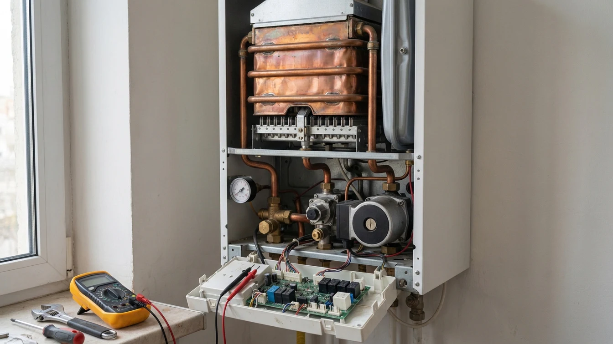
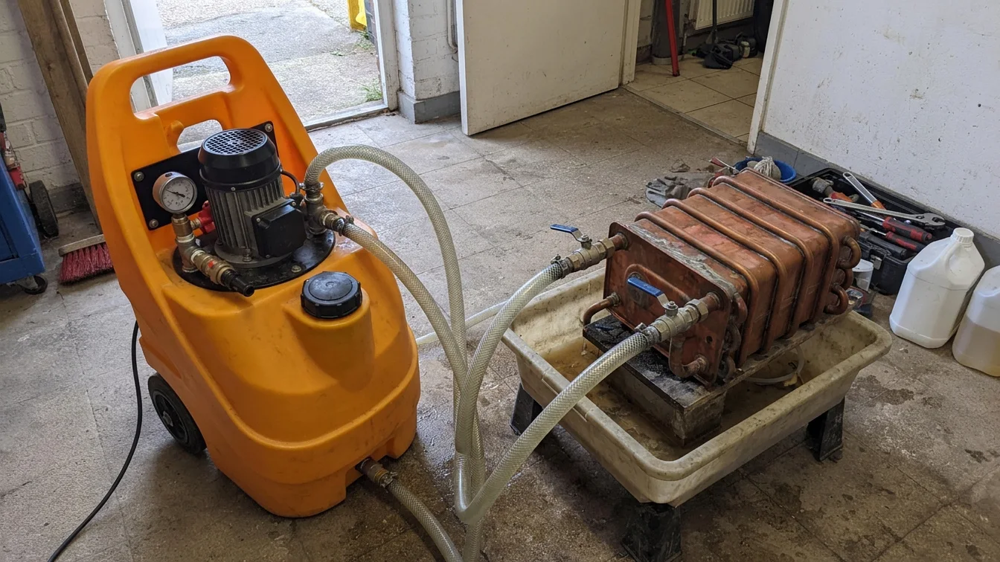
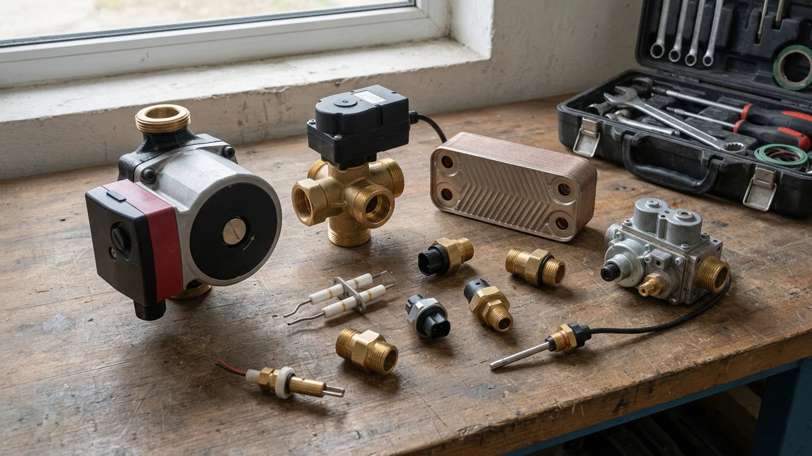

Срочный ремонт и сервис газовых котлов в Алматы и Алатау
Оперативная диагностика, химическая промывка теплообменников, ремонт электронных плат, замена насосов и трёхходовых клапанов на дому. Обслуживаем Hubert, Teploros, Daewoo, Rinnai, Buran, Navien, Kiturami, Baxi, Bosch, Ariston и другие марки с гарантией до 12 месяцев.
Основные услуги по ремонту котлов

Диагностика и ремонт
Устранение ошибок розжига, утечек газа и теплоносителя, замена датчиков NTC, газовых клапанов, турбин и циркуляционных насосов.

Химпромывка теплообменника
Профессиональная промывка первичных и вторичных теплообменников от накипи для восстановления КПД и снижения расхода газа.

Замена запасных частей
Подбор и установка циркуляционных насосов, трёхходовых клапанов, датчиков и оригинальных комплектующих в день обращения.
Цены и тарифы
Базовые расценки начинаются от 15 000 ₸. Итоговая стоимость зависит от модели котла (турбовый или атмосферный), сложности разборки и сборки, а также стоимости химии и запчастей — согласовывается до начала работ.
| Услуга | Стоимость | Примечание |
|---|---|---|
| Замена циркуляционного насоса | от 15 000 ₸ | Работа и проверка контура |
| Замена трёхходового клапана | от 15 000 ₸ | Настройка работы отопления и ГВС |
| Чистка и профилактика котла | от 25 000 ₸ | Обслуживание узлов и подготовка к работе |
| Химпромывка котла | от 40 000 ₸ | От 40 000 ₸ на котлы с лёгким доступом; на котлы со сложной разборкой/сборкой (турбо/не турбо, химия от 15 000 ₸/л) — расчёт после осмотра |
| Сложные работы и ремонт плат / узлов | от 30 000 ₸ | Зависит от модели котла и объёма работ |
Вызов мастера на дом
24/7 без выходныхОставьте заявку — мастер перезвонит в течение 5 минут или примет заказ в WhatsApp по номеру +7 771 544 27 86